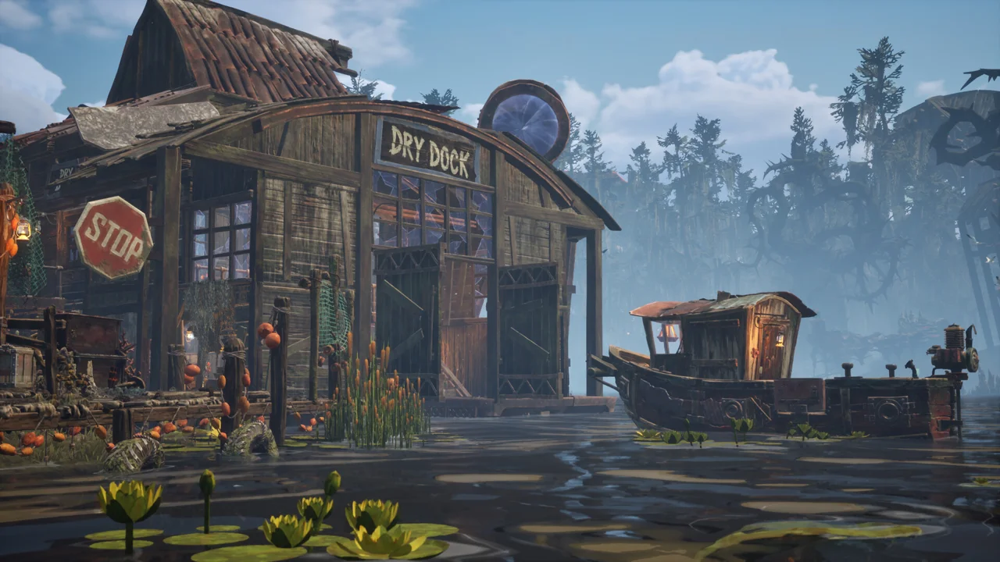

Platforms & controllers / Checked 12 November 2026
DREADMOOR platforms and PlayStation controller setup
The verified release is Windows PC through Steam, in Early Access since 9 November 2026. The official sources checked here contain no PS5, Xbox or Switch release announcement. On PC, Update #1 added native DualSense support and directs DualShock 4 users to enable Steam Input.
Choose from your hardware
| Your setup | Available route | What to check |
|---|---|---|
| Windows PC | Steam Early Access | Read the live requirements and current price on the store before buying. |
| PC and DualSense | Native controller support added in Update #1 | Install current updates and compare the game's controller prompts. |
| PC and DualShock 4 | Steam Input | Enable Steam Input in the game's Steam controller settings. |
| PS5, Xbox or Switch console | Await a platform announcement | The sources reviewed provide no console release date. |
| Mac or Linux desktop | No native build listed in the checked store requirements | Compatibility-layer performance has not been tested here. |
DREADMOOR's Steam store and current requirements. This is an external store link, opening in the same tab.
Dream Dock develops DREADMOOR and Digital Vortex Entertainment publishes it. Use Steam app 3629430 to identify the correct game when comparing keys or store listings. The official description identifies a first-person fishing adventure with on-foot exploration and combat. Dredge is a separate game.

Set up a PlayStation controller on PC
- Update DREADMOOR in Steam before comparing controls.
- For DualSense, begin with the native support added in Update #1.
- For DualShock 4, open the game's Steam Properties, choose Controller and enable Steam Input, as directed by the developer.
- If switching from a gamepad to a mouse fails at a water-gate sluice, install Update #2, which specifically addresses that transition.
Update #3 also adds a boat-camera auto-rotation setting. If camera movement is the problem, check that option separately from controller detection.
Developer Updates #1–#3, including controller support and sluice fixes.
Check single-player and handheld expectations
The developer FAQ describes DREADMOOR as single-player only, and Steam lists Single-player. For a shared co-op session, the checked release does not meet that requirement.
The October Demo announcement described work on Steam Deck playability and stated that the game had not yet received a Verified rating. That historical Demo statement cannot establish today's full-release performance or certification. Check the current Steam compatibility panel before choosing the handheld route.
Developer FAQ on single-player support · Official announcement history.
Related DREADMOOR guides
Prepared from linked developer information and attributed player reports. Gameplay steps have not been personally tested. Early Access behavior may change after this check.